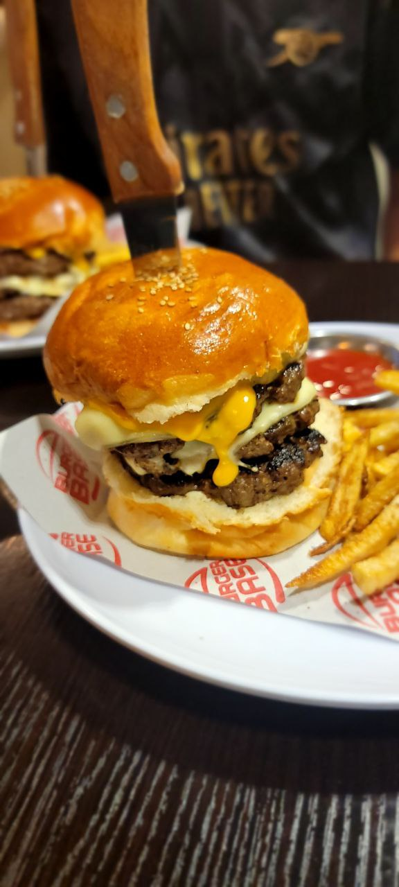
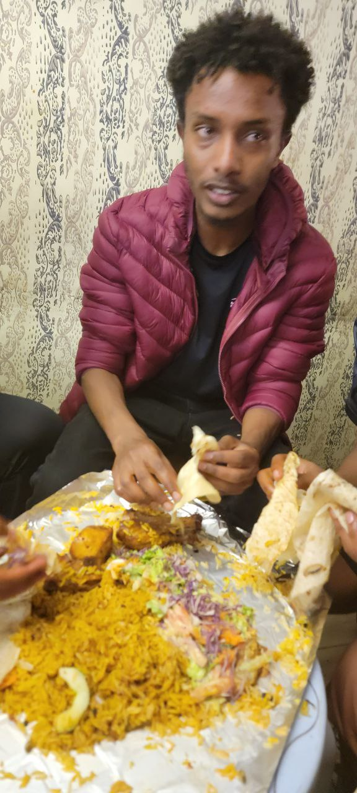
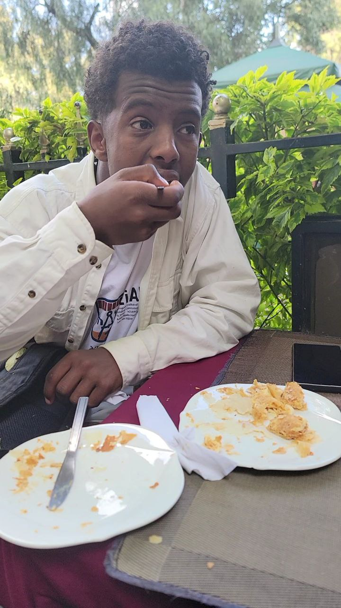

FOOTBALL

For me, it's not just a hobby, it's far more than that. Football, the beautiful game captivated my passion since I was a young boy. As I grew older, my love for football only deepened. Football is a sport that can be enjoyed by people of all ages and abilities. It is a great way to stay active and healthy, and it is a great way to make new friends and have fun. If you're looking for a hobby that will challenge you, teach you new things, and bring you joy, I highly recommend football.
Here's a video of me playing football with my friends.
FOOD
Another hobby of mine is food. Food is a source of nourishment, joy, and cultural exploration, and it's no wonder that many people find themselves drawn to the culinary world. My friends and I really enjoy food. It's a means of entertainment for us.

